Dans la ville antique de Lijiang, il y a des lanternes rouges avec des murs gris, de vieilles routes en pierre, des maisons en bois de style Naxi et le vieil homme en costumes nationaux Naxi. Contre le ciel bleu et les nuages blancs, le beau paysage de la ville antique de Lijiang est facilement photographiable. Dans la ville antique de Lijiang, vous voyez souvent des journaux portant des costumes ethniques locaux pour prendre des photos, et même dans des costumes anciens, naviguent dans les ruelles de la ville antique, en regardant leurs dos rampants se former avec le paysage de cette ville antique Un paysage magnifique, les gens ne peuvent s'empêcher de regarder ailleurs.
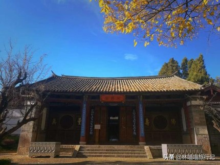 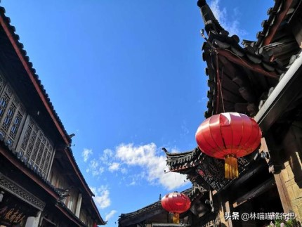Chaque coin de l'ancienne ville de Lijiang est très approprié pour prendre des photos, peu importe les vêtements que vous portez et la beauté des photos (bien sûr, vous devez avoir un beau temps); en plus de prendre des photos dans la ville antique, il est préférable de regarder dans la boutique de tambourins ou de la nettoyer, Capable de tirer un sens de la vue à grande échelle.
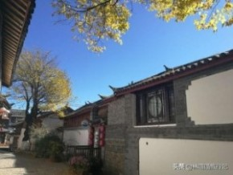 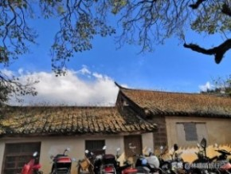 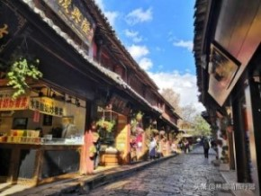La beauté et le mystère du lac Lugu ont attiré de nombreux touristes, en particulier les légendes de la tribu Mosuo et les coutumes folkloriques de la tribu Mosuo, qui nous ont profondément fascinés en tant que touristes étrangers. N'importe quel endroit du lac Lugu est un lieu photo sacré. La nuit, vous pouvez également prendre des photos et prendre des photos avec des personnes appartenant à des minorités ethniques et danser avec elles.
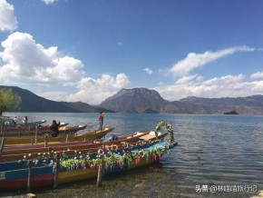 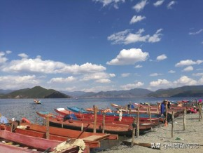 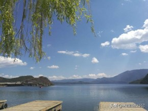En parlant de l'ancienne ville de Shuhe, quelqu'un devrait-il dire que le paysage est le même que l'ancienne ville de Lijiang? Personnellement, je pense que c'est similaire, mais la vieille ville de Shuhe fait sentir aux gens qu'ils sont dans la vieille ville. Lijiang ne convient que pour prendre des photos, mais non seulement pour prendre des photos, mais aussi pour profiter de la tranquillité de la ville antique. Différent; les gens d'ici auront l'air plus simples et enthousiastes. L'ancienne ville de Lijiang a de beaux paysages mais une humanité faible. Fondamentalement, c'est un étranger qui fait des affaires. L'ancienne ville de Shuhe a une touche d'humanité et de réalisme.
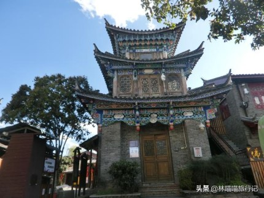 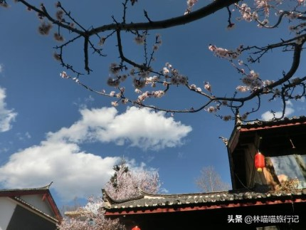Lashihai, c'est la première attraction à laquelle je suis allé après mon arrivée à Lijiang. Les photos sont vraiment belles. Il n'est pas exagéré de dire que les célébrités Internet prennent des photos de la Terre Sainte. Il est également raisonnable de mettre Lashihai à l'arrière parce que j'y suis allé. Les gens de Lijiang sont fondamentalement opposés par cet endroit, non pas que cette attraction ne vaut pas la peine d'être vue, mais que beaucoup de gens écouteront de nombreux avocats pour combien d'argent ils peuvent passer (je ne sais pas exactement combien c'est pour les autres, c'est très bon marché de toute façon) Beaucoup de gens ont suivi pour être petits et bon marché, et plus tard ils ont été piqués avec une grosse somme d'argent. C'est la vraie chose que j'ai souvent entendue à Lijiang auparavant, donc beaucoup de gens ont une mauvaise impression de Lashihai et veulent aller à Lashi La mer doit encore s'inscrire pour un groupe. Cent ou deux cents jours, y compris la nourriture chinoise dans les deux sens et les petits kayaks, non seulement passent une bonne journée, mais prennent également de belles photos.
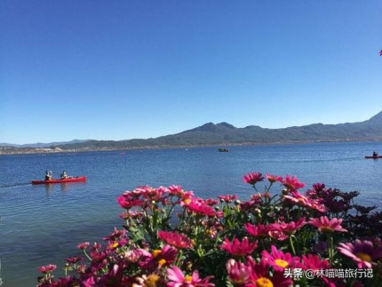 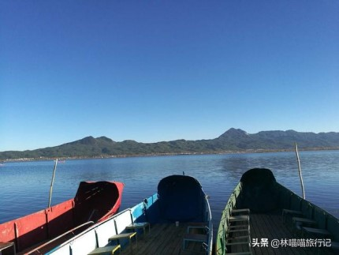Prenez le train à grande vitesse D-head de Kunming à Guangnan en seulement deux heures. Il suffit d'aller à Babao Town et de descendre à Funing Station, ou de prendre un bus directement depuis Guangnan.
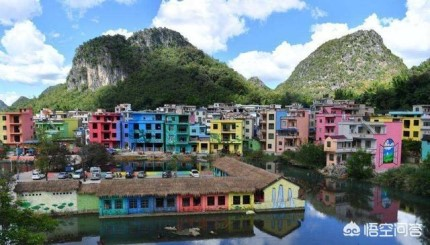Ceci est un village de montagne coloré. Le village de Heye, qui appartient à la ville de Babao, dans le comté de Guangnan, est la source de la rivière Babao. Le paysage est pittoresque, et seulement 200 Zhuang y vivent. Parce que le village est plein de peinture 3D enfantine, il attire de nombreux touristes.
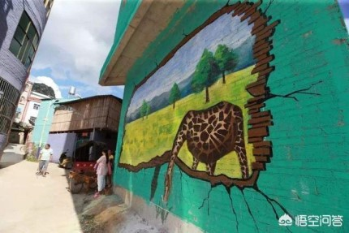 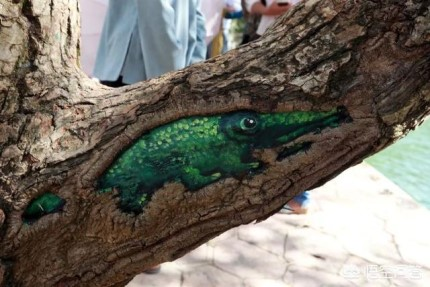En regardant de loin, le Heye coloré se trouve sur la rive de la rivière Babao, comme une petite ville dans un conte de fées, gardant les rêves des gens.
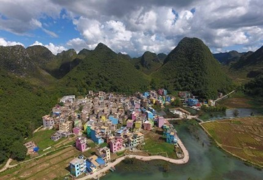Dali a une table blanche au bord de la mer, du littoral et du bord de la rocade. Je ne sais pas combien de poèmes de personnes et de lieux éloignés ont été confiés, ni combien de souvenirs de retour et de jeunesse ont été laissés.
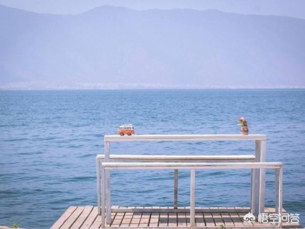Cet oiseau est aussi un oiseau de mer: le goéland mouette à bec rouge. Du lac Dianchi d'origine à Kunming, il s'est progressivement développé au lac Erhai à Dali et au lac Fuxian à Yuxi.La plus belle scène en hiver, la scène la plus humaine et naturelle, est le même cadre avec l'homme et la mouette. C'est bizarre? Plus de mouettes sont photographiées sur le plateau que dans n'importe quelle ville côtière
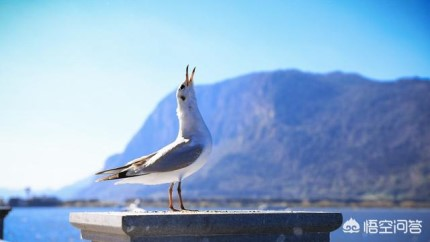Par conséquent, en hiver, lorsque vous voyagez au Yunnan, assurez-vous de prendre une photo d'une mouette! Le site principal est le barrage Dianchi à Kunming, et les célébrités n'en sont pas exemptées. L'année dernière, Cui Yongyuan a pris une photo avec la mouette sur le barrage de Dianchi.